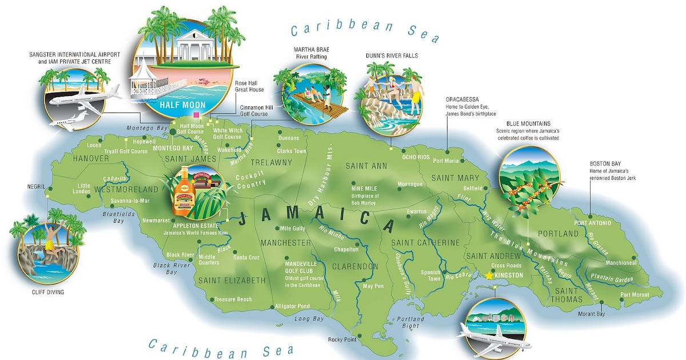
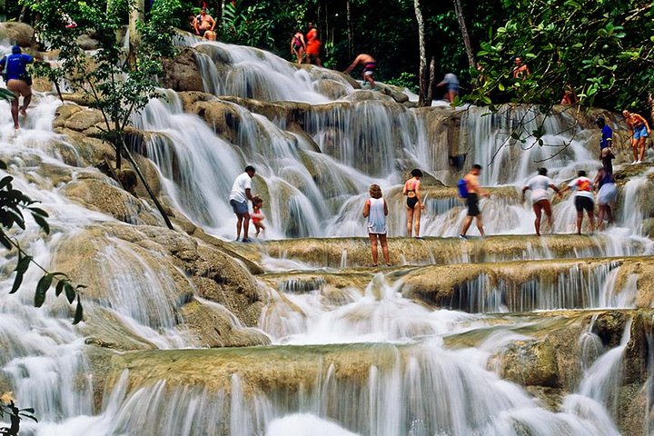
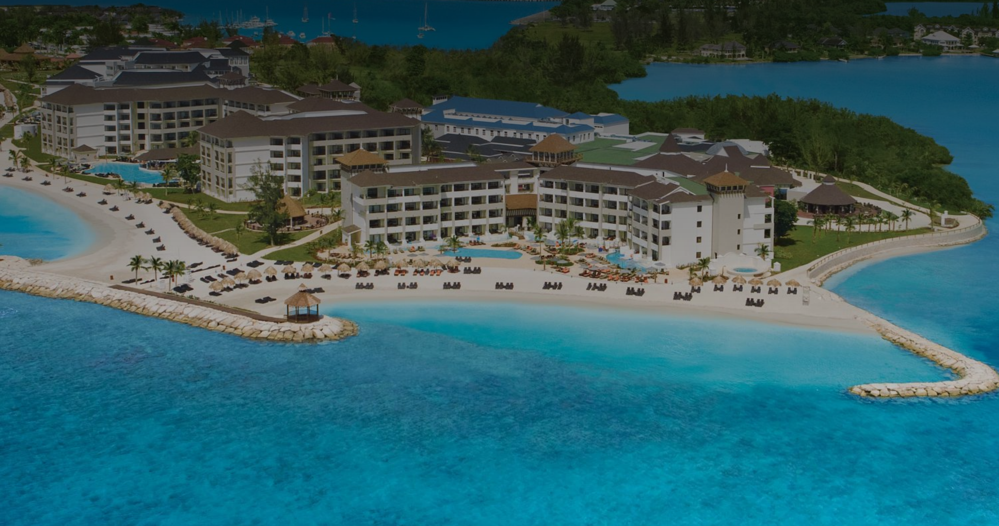
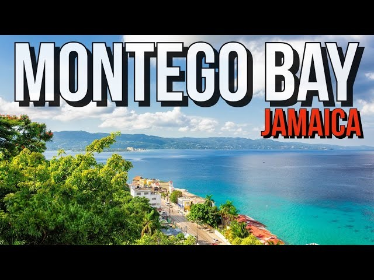
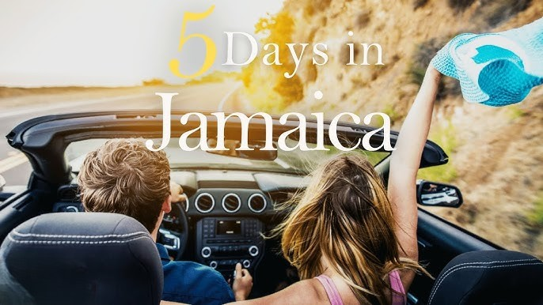
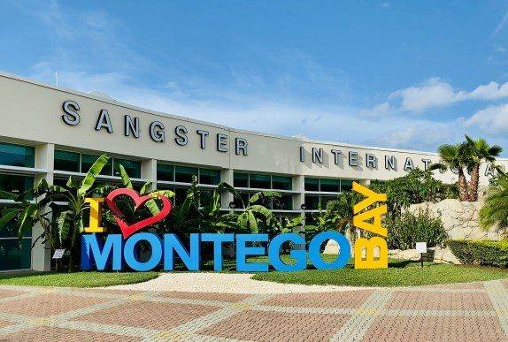
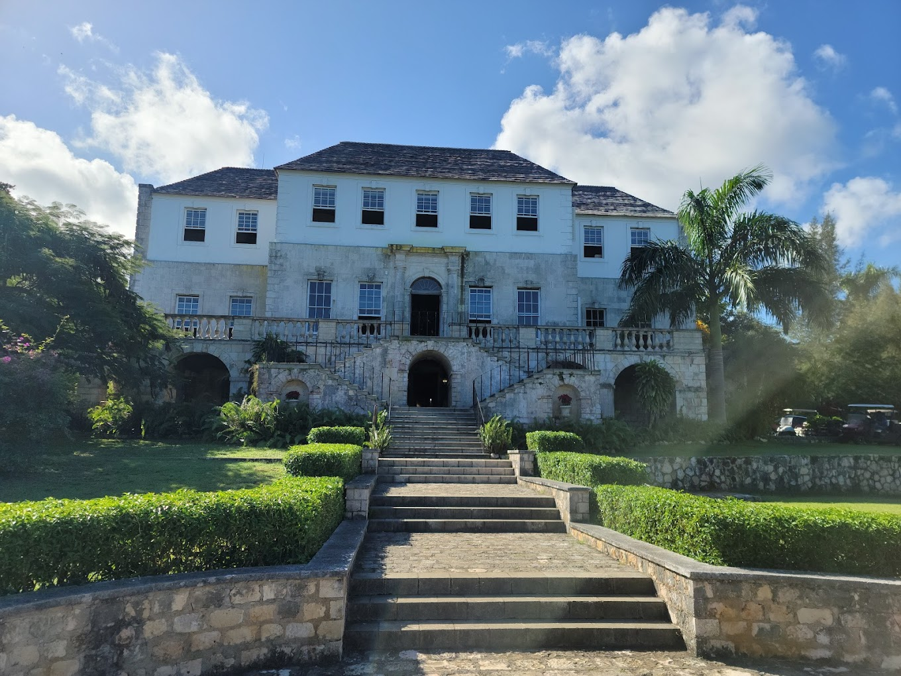
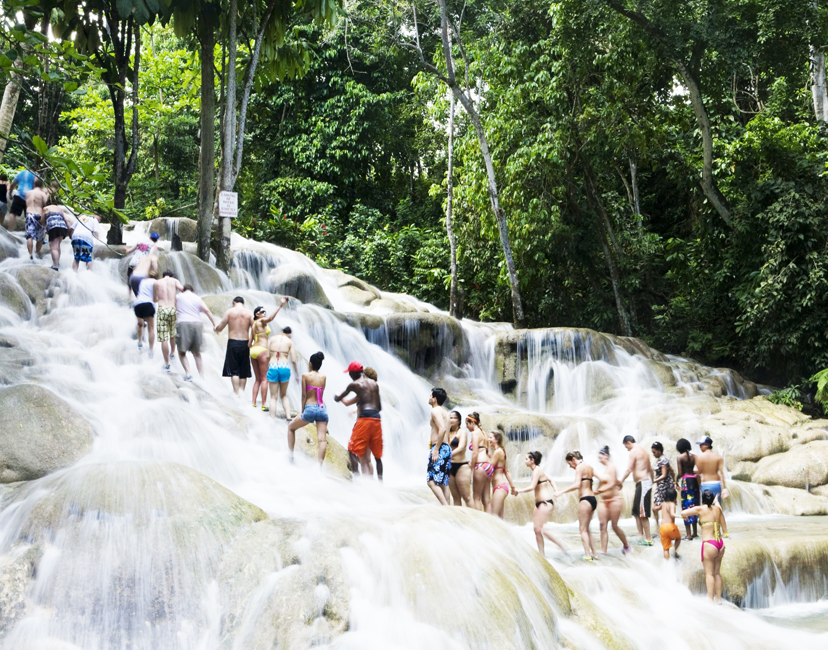
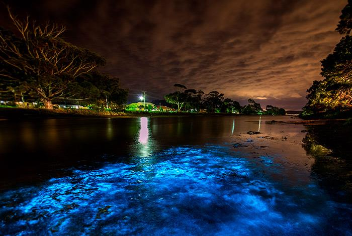
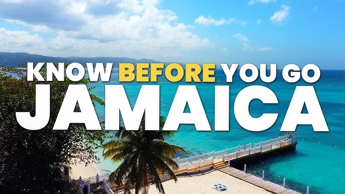

Tổng quan:
Thời điểm tốt nhất để đến thăm Montego Bay, Jamaica là vào mùa khô, từ giữa tháng 12 đến giữa tháng 4. Giai đoạn này có nhiều ánh nắng nhất, nhiệt độ thoải mái và độ ẩm thấp hơn, rất lý tưởng để tận hưởng bãi biển và các hoạt động ngoài trời.
- 🔎 Chuyến bay Từ: Sân bay Quốc tế Dulles (IAD) đến: Sangster International Airport (MBJ) – gần Montego Bay. Hoặc Norman Manley International Airport (KIN) – gần Kingston.
- Hãng bay có thể chọn: American Airlines, JetBlue, Southwest, Delta..
- 🕒 Mẹo: Đặt trước ít nhất 4–8 tuần để có giá tốt.
- Tìm các gói bao gồm cả chuyến bay + khách sạn để tiết kiệm (Expedia, Costco Travel, v.v.)

Điểm đến nổi bật ở Jamaica .
- Dunn’s River Falls (Ocho Rios). ⛰️ Thác nước nổi tiếng nhất Jamaica – bạn có thể leo lên thác cùng nhóm du khách. 🕒 Thời gian tham quan: 2–3 giờ. 🎟️ Có phí vào cổng (~$25 USD/người).
- Seven Mile Beach (Negril). 🏖️ Một trong những bãi biển đẹp nhất Caribbean.
- Rick’s Café (Negril). 🌅 Nơi ngắm hoàng hôn đẹp nhất Jamaica.
- Luminous Lagoon (Falmouth). 🌌 Đầm phát sáng sinh học hiếm có trên thế giới. 🕒 Tour khởi hành sau hoàng hôn (~7:30 PM). 🎟️ Giá tour ~ $25–30 USD.

🏨 Khách sạn/Khu nghỉ dưỡng ở Jamaica
Jamaica nổi tiếng với các khu nghỉ dưỡng trọn gói sang trọng. Đề xuất tìm kiếm:
Hyatt Zilara Rose Hall (Adults Only)
- ⭐ Đánh giá: 5 sao – sang trọng, dành cho người lớn
- 🍽️ Số nhà hàng: 10+ (gồm cả khu Hyatt Ziva bên cạnh)
- 🍴 Ẩm thực: Jamaica, Pháp, Ý, Á, steakhouse, buffet, grill
- 🎉 Có bar, pool bar, beach bar, live music mỗi tối
- 🎯 Phù hợp: cặp đôi, vợ chồng, muốn nghỉ ngơi yên tĩnh
- 👉 Link chính thức: Website

Iberostar Grand Rose Hall (Adults Only)
- ⭐ Đánh giá: 5 sao – cao cấp, phong cách châu Âu
- 🍽️ Số nhà hàng: 6 nhà hàng a la carte + buffet + 24h room service
- 🍴 Ẩm thực: Nhật Teppanyaki, Ý, steakhouse, Jamaica
- 🧖 Spa lớn, hồ bơi vô cực, view biển
- 🎯 Phù hợp: muốn dịch vụ sang trọng, chất lượng ẩm thực cao
- 👉 Link chính thức: Website

Sandals Montego Bay (Adults Only)
- ⭐ Đánh giá: 5 sao – thương hiệu nổi tiếng toàn Caribbean
- 🍽️ Số nhà hàng: 12 nhà hàng quốc tế
- 🍴 Ẩm thực: seafood, Nhật, Ý, Caribbean, pizza, grill, patisserie
- 🍹 Bar không giới hạn, hồ bơi + jacuzzi
- 🎯 Phù hợp: cặp đôi muốn honeymoon, dịch vụ lãng mạn
- 👉 Link chính thức:Website

Secrets Wild Orchid Montego Bay (Adults Only)
- ⭐ Đánh giá: 5 sao – riêng tư, lãng mạn, yên tĩnh
- 🍽️ Số nhà hàng: 9 nhà hàng + buffet + snack bar
- 🍴 Ẩm thực: Mexico, Pháp, Nhật, Jamaica, grill, coffee shop
- 🎤 Có cả quán cà phê, quán lounge, club
- 🎯 Phù hợp: người muốn nghỉ dưỡng có chiều sâu, không gian riêng tư
- 👉 Link chính thức:Website

RIU Palace Jamaica (Adults Only)
- ⭐ Đánh giá: 4.5 sao – all-inclusive giá tốt
- 🍽️ Số nhà hàng: 5+ (bao gồm buffet & a la carte)
- 🍴 Ẩm thực: Nhật, Ý, Jamaica, grill, steakhouse
- 🎯 Phù hợp: ngân sách vừa phải nhưng vẫn muốn nhiều dịch vụ
- 👉 Link chính thức:Website

📌 Lưu ý chung khi chọn resort all-inclusive
- Giá đã bao gồm: ăn uống, nước uống, snack, minibar, hoạt động giải trí, thể thao nước nhẹ, show đêm.
- Một số nhà hàng phải đặt chỗ trước (đặc biệt là Japanese hoặc steakhouse).
- Tip thường không bắt buộc, nhưng bạn có thể bo thêm cho phục vụ nếu hài lòng.
- Nếu bạn ở Hyatt Zilara có thể dùng dịch vụ chung với Hyatt Ziva (mở rộng thêm nhà hàng).

Dưới đây là hướng dẫn từng bước hoàn chỉnh cho chuyến đi 5 ngày du lịch của bạn từ Fairfax, VA đến Montego Bay, Jamaica

🎒Chuẩn bị
- 🎫 Giấy tờ cần thiết: Hộ chiếu (passport): còn hiệu lực ít nhất 6 tháng kể từ ngày nhập cảnh Jamaica.
- Vé máy bay khứ hồi. Giấy xác nhận đặt khách sạn / resort
- Bảo hiểm du lịch quốc tế (khuyến khích)
- Bản sao giấy tờ cá nhân (photo hộ chiếu, bảo hiểm, vé máy bay...) đề phòng mất
- 💵 Tài chính: Đổi một ít tiền sang Đô la Jamaica (JMD) hoặc dùng USD (nhiều nơi ở Jamaica chấp nhận USD).
- Mang theo thẻ tín dụng/debit (Visa/Mastercard).
- 📱 Thiết bị: Sim điện thoại quốc tế hoặc đăng ký roaming với nhà mạng (hoặc mua sim Jamaica khi đến nơi).
- Ứng dụng cần tải: Google Maps, Google Translate, WhatsApp, resort app nếu có.

📅 Ngày 1: Đến Montego Bay – Nhận phòng – Thư giãn
- ✈️ Hạ cánh tại Sangster International Airport (MBJ)
- 🚖 Di chuyển đến resort (10–30 phút)
- 🏖️ Tắm biển riêng trong resort hoặc Doctor’s Cave Beach (nổi tiếng nhất Montego Bay)
- 🍽️ Ăn tối tại nhà hàng trong resort hoặc The Pelican Grill (địa phương), Margaritaville (sôi động, ngay biển)

📅 Ngày 2: Khám phá Montego Bay – Văn hoá – Shopping
- 🏚️ Tham quan Rose Hall Great House – biệt thự cổ, nghe chuyện về phù thủy White Witch
- 🚣 Martha Brae Rafting – chèo bè tre dọc sông thơ mộng (~45 phút)
- 🛍️ Mua sắm tại Whitter Village hoặc Shoppes at Rose Hall
- 🎶 Buổi tối: Thư giãn với âm nhạc reggae tại resort hoặc quán bar ngoài trời

📅 Ngày 3: Day Trip – Dunn’s River Falls & Ocho Rios
- 🚐 Tour nguyên ngày đến Ocho Rios (~1.5 giờ)
- ⛰️ Leo thác nước Dunn’s River Falls (có người hướng dẫn, rất thú vị)
- 🐬 Ghé Dolphin Cove nếu thích bơi cùng cá heo (tuỳ chọn)
- 🍴 Ăn trưa tại Scotchies – món gà nướng jerk nổi tiếng Jamaica
- 🕒 Trở về Montego Bay buổi chiều hoặc tối

📅Ngày 4: Thư giãn – Luminous Lagoon
- 🌴 Nghỉ ngơi, tắm biển, massage, bơi hồ bơi, trải nghiệm water sport tại resort
- 🌌 Buổi tối: Tour Luminous Lagoon (30–40 phút từ Montego Bay)
- 🚤 Đi thuyền buổi tối ra đầm nước phát sáng
- 🧜 Có thể bơi dưới nước phát quang sinh học
- 📸 Mang theo máy ảnh/điện thoại có chế độ chụp đêm
📅Ngày 5: ✈️ Mua quà – Trở về
- 🧳 Thư giãn sáng sớm, ăn sáng
- Mua quà lưu niệm: rum, cà phê Blue Mountain, đồ thủ công bằng gỗ
- Di chuyển ra sân bay MBJ, kết thúc chuyến đi

📌 Lưu ý riêng khi ở Montego Bay
- Taxi địa phương không có đồng hồ đo – luôn hỏi giá trước.
- Không nên mang theo đồ trang sức đắt tiền nếu ra ngoài buổi tối.
- Có thể book tour trực tiếp tại khách sạn, an toàn và đúng lịch hơn.
- Mang theo chút snack nhẹ hoặc thanh năng lượng nếu đi tour dài.
- Hỏi trước khách sạn/resort có gói picnic box cho khách mang theo không (nhiều nơi có).
- Mọi nơi đều chấp nhận USD – không cần đổi sang tiền JMD nhiều.
- Không nên uống nước máy (mua nước đóng chai).
- Luôn dùng kem chống nắng SPF cao.
- Không nên ra ngoài khu du lịch vào ban đêm một mình.
- Để ý đến thời tiết (tháng 6–11 là mùa mưa bão, nên xem dự báo).
- Mặc trang phục nhẹ, chống nóng, và thoải mái.